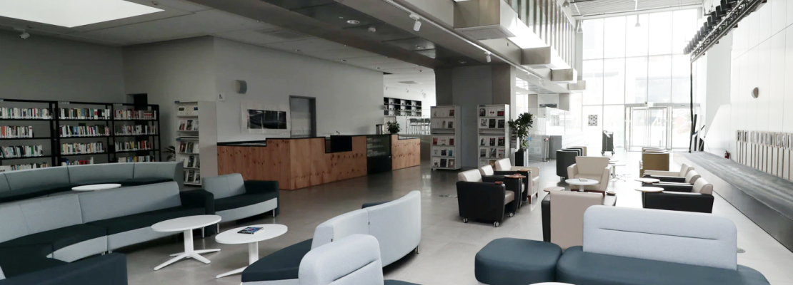

Дизайн общественных интерьеров
Кейс клубного дома Tomazzi Hall
Создать объект, подобного которому в Санкт-Петербурге еще не было, — такую задачу поставил перед собой девелопер Interior Lounge, продумывая клубный дом Tomazzi Hall. Над экстерьером комплекса работала команда одного из крупнейших архитектурных Бюро России — «Студия 11» разработал концепцию, а мы оформили интерьер 10 парадных и 3 лаунж-зон.
Заказчик знал команду, следил за нашей деятельностью, поэтому никого больше не рассматривал — поручил дизайн парадных и лаунж-зон нам. Основными моментами, на которые мы оринтировались, стали:
- Источники вдохновения планировалось искать в строгой геометрии, модерне и духе «ревущих двадцатых»;
- Необходимо было выдержать дорогой и одновременно элегантный стиль;
- Ключевой элемент дизайна любого общественного пространства — удобство для жителей.
Начало работы и источники вдохновения
Над экстерьером комплекса работала команда одного из крупнейших архитектурных бюро России — «Студия 11», а мы оформили интерьер 10 парадных и 3 лаунж-зон.
Заказчик знал команду, следил за нашей деятельностью, поэтому никого больше не рассматривал — поручил дизайн парадных и лаунж-зон нам.
«Нам хотелось поддержать внешнюю архитектурную концепцию, но внутри добавить что-то необычное. Сделать некое подобие матрешки, чтобы все время открывались новые смыслы и элементы».
Иван Грачев
Очень самобытный и необычный проект.
Мария Рачинская
Мне особенно понравилось решение лестничных клеток. Кружки вообще очень стильные!
Светлана
Очень нравится, что в городе развиваются такие проекты. Надеюсь, такие проекты скоро будут не только в частных домах, но и в кафе, музеях, театрах. Я бы сходила!